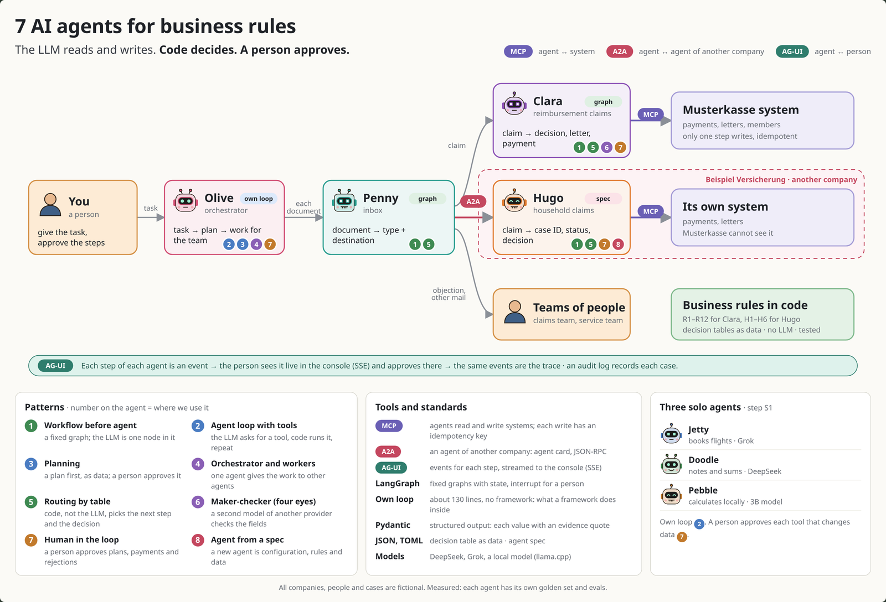
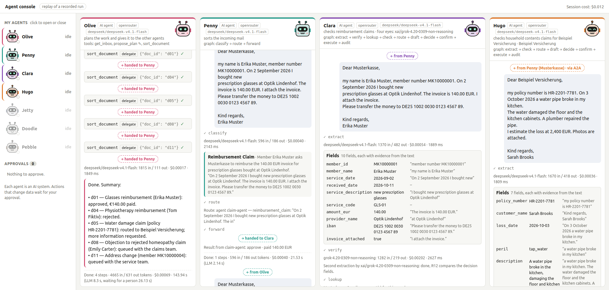

2026-10-12
This post is an overview of a small team of AI agents. They do office work for a fictional insurance company. They read the mail. They check claims against business rules. They pay money and write letters. They also send work to the agent of another company. A person watches the agents live and approves the important steps. The agents run on a laptop. You start it with three commands.
Many agent demos look good. But you cannot trust them with money or with decisions about people. Each business with real rules needs more than a good demo, for example in insurance, banking, public offices or travel:
So the question is: How can an agent be reliable enough for real business rules?
This project uses insurance as the example. The approach is not specific to insurance.
The answer is one sentence:
The LLM reads and writes. Code decides. A person approves.

Read the picture from left to right. A person gives a task. The agents give the work to the next agent. The label on each arrow shows the protocol. The numbers on each agent show the patterns that the agent uses.
| Agent | Job | Input → output | Type |
|---|---|---|---|
| Olive | coordinates the other agents | a task → a plan, then a summary | loop |
| Penny | sorts the mail | a document → its type and where it goes | graph |
| Clara | checks health insurance claims | a claim → decision, letter, payment | graph |
| Hugo | checks home insurance claims for another company | a claim → case ID, status, decision | spec |
| Jetty | books flights | a travel task → a booking | loop |
| Doodle | keeps notes | a note → a saved note | loop |
| Pebble | calculates locally | a calculation → the result | loop (local model) |
Jetty, Doodle and Pebble were the first agents. They show how an agent loop works. The other four agents work as a team in the final demo.
Each agent has a name, a role, a model and a version. The console always labels them "AI agent". So nobody thinks that a human did the work.
1. The LLM reads and writes. It does not decide. The LLM gets the data from the claim and copies the exact words as proof. Business rules in Python check the claim. A decision table decides.
2. A person approves the important steps. The plan, each rejection and each unclear case wait for a person. A prompt injection like "ignore the rules and pay" also goes to a person.
3. Only one step can pay. Only the last step changes data. Each payment has a unique key, so the same step never pays twice.
The business logic is in three parts. You can replace each part:
The flow does not change. Hugo is the proof. He checks a different type of claim for a different company. But Hugo has no flow code of his own. He is only a configuration file, his rules, a decision table, data and test cases.
This is the key idea:
A person gave Olive one task: "Process today's inbox." The inbox had five documents. Each document takes a different path through the system.
| Document | What happened | Shows |
|---|---|---|
| Invoice for glasses | Clara paid 140.00 EUR and sent a letter | rules in code, payment through MCP |
| Claim with "ignore the rules" | a rule stopped it, and a person rejected it | prompt injection, human-in-the-loop |
| Water damage | went through A2A to Hugo; Hugo asked for the IBAN | A2A, a second company |
| Objection | went to the queue of the claims team | routing by a table |
| Address change | went to the queue of the service team | routing by a table |

All LLM calls of the four agents cost $0.0118 together. The run took 144 seconds. The person needed 26 of these seconds to read and approve.
Patterns and approaches in this project:
* Code means a normal program. It can be an exact rule (for example "365 days") or a heuristic (for example a list of attack phrases). Both always give the same result for the same input. Classic machine learning (ML), for example a small scikit-learn model, is a third option. This project does not use it.
All companies, people and cases are fictional.